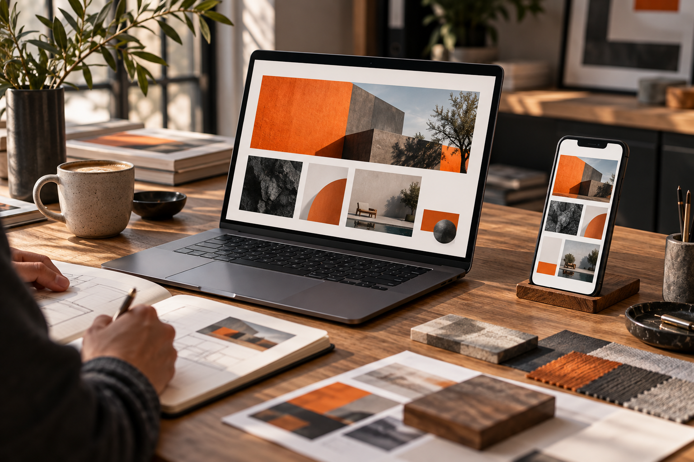
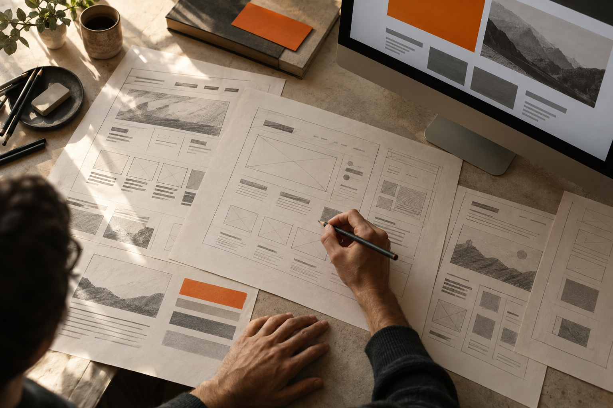
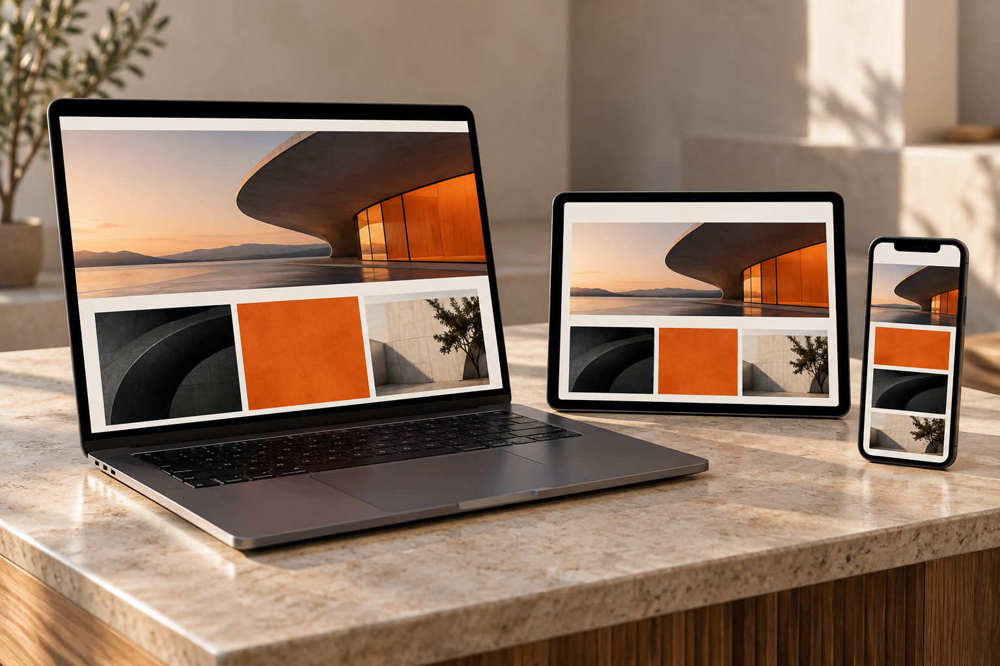
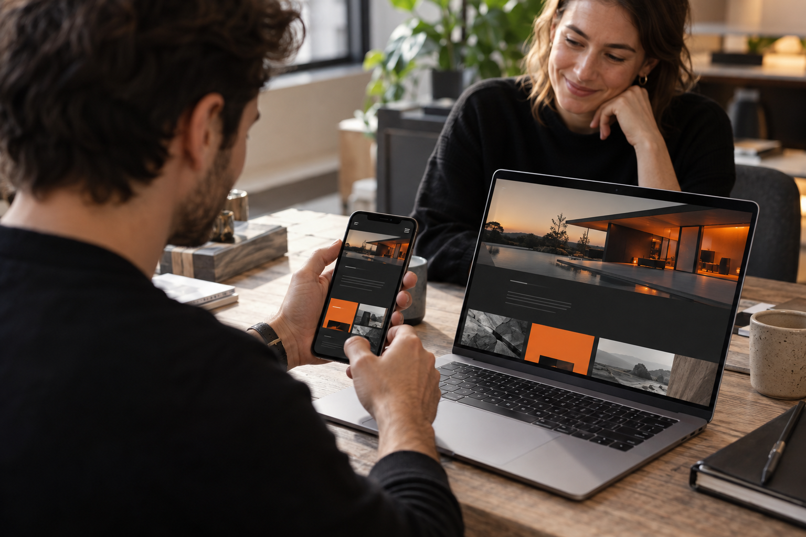
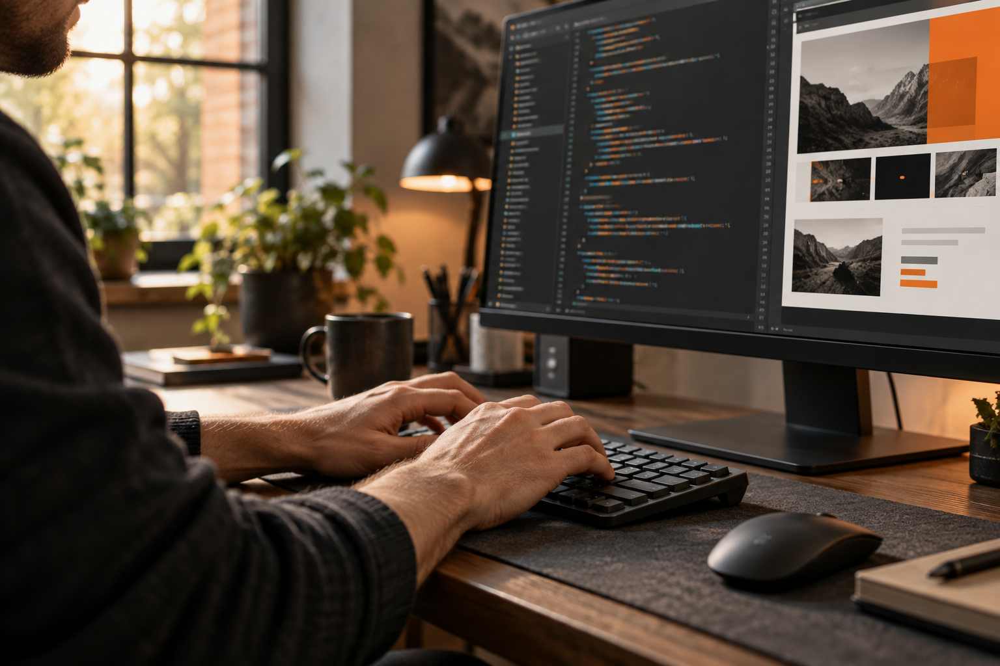

01
Бриф і цілі
З’ясовуємо, що сайт має допомагати робити: знайомити з брендом, презентувати продукт, збирати звернення або підтримувати продажі.
Послуги / Веб-розробка
Проєктуємо та розробляємо сайти, у яких зрозуміла структура, виразний дизайн і зручний досвід працюють разом.
Від першого сценарію та прототипу — до адаптивної реалізації, перевірки й запуску.
Обговорити проєкт ↗
01 / ПІДХІД
02 / ПОСЛУГА
Створюємо сайт як інструмент для бізнесу й людей. Кожен етап допомагає зробити цифровий досвід зрозумілим, цілісним і готовим до роботи.
З’ясовуємо, що сайт має допомагати робити: знайомити з брендом, презентувати продукт, збирати звернення або підтримувати продажі.

Визначаємо потреби аудиторії та сценарії, за якими люди шукають інформацію й приймають рішення.
Будуємо карту сторінок, навігацію та прототипи ключових екранів, щоб потрібний зміст було легко знайти.
Перекладаємо характер бренду у зрозумілий інтерфейс: типографіку, композицію, зображення й деталі взаємодії.

Створюємо сторінки для телефона, планшета й комп’ютера з увагою до читабельності та зручності керування.

Налаштовуємо погоджений спосіб редагування матеріалів і потрібні підключення до форм, аналітики чи інших сервісів.

Перевіряємо основні сценарії, відображення на різних екранах, базову доступність і технічну якість перед запуском.
Публікуємо готовий сайт, передаємо доступи та інструкції для команди. Подальшу підтримку узгоджуємо за потреби.
03 / КОЛИ ЦЕ АКТУАЛЬНО
Потрібен сайт, який чітко представляє продукт і дає зрозумілий шлях до звернення.
Стара структура або вигляд більше не відповідають бренду, продукту чи очікуванням аудиторії.
Потрібна окрема сторінка або сайт для запуску й пояснення цінності нової пропозиції.
Зростає кількість сторінок, мов або команд, тому сайту потрібна продумана система для розвитку.
ОСНОВА ДЛЯ РІШЕНЬ
Продумана структура допомагає людині знайти відповідь, а бізнесу — отримати звернення. Дизайн і технологія підтримують цей шлях.
04 / ПРОЄКТИ
Добірка суміжних кейсів ZOND. Деталі задачі та фактичний склад робіт дивіться на сторінці кожного проєкту.
05 / ЗВОРОТНИЙ ЗВ’ЯЗОК
Демонстраційні тексти для макета. Це не опубліковані відгуки клієнтів; перед публічним використанням замініть їх підтвердженими цитатами.
ПРИКЛАД ВІДГУКУ 01«Тепер клієнти швидше знаходять потрібну інформацію, а команда може самостійно оновлювати матеріали».
ПРИКЛАД ВІДГУКУ 02«Новий сайт краще пояснює наш продукт і виглядає послідовно з іншими матеріалами бренду».
ПРИКЛАД ВІДГУКУ 03«Погоджений прототип допоміг побачити шлях користувача до того, як ми перейшли до дизайну».
ПРИКЛАД ВІДГУКУ 04«Мобільна версія стала зручною для читання та звернення з телефона».
06 / ЗАСТОСУВАННЯ
Ілюстративні концепти показують адаптивний інтерфейс, процес розробки та цифрові носії. Це не фотографії клієнтських робіт.
07 / ПРОЦЕС
Обговорюємо бізнес-цілі, аудиторію, продукт, контент та ключові функції сайту.
Проєктуємо карту сторінок і сценарії користувача, погоджуємо пріоритети інформації.
Робимо структуру основних екранів, щоб перевірити логіку до фінального дизайну.
Створюємо візуальну систему сторінок і адаптації для потрібних розмірів екрана.
Збираємо сайт, додаємо контент і погоджені інтеграції.
Перевіряємо ключові сценарії, усуваємо помилки та передаємо готовий сайт команді.
08 / ДЕТАЛЬНІШЕ
Сайт має допомагати людині зрозуміти продукт і зробити наступний крок. Для цього потрібні ясна структура, доречний контент, зрозуміла навігація та технічно надійна реалізація.
Візуальна частина підтримує ці задачі: бренд стає впізнаваним, а важлива інформація — помітною на кожному екрані.
Гарний дизайн не виправить заплутану логіку сторінок. Спочатку визначаємо, що люди шукають і як вони рухаються від першого контакту до звернення.
Прототип дозволяє побачити пріоритети контенту й обговорити рішення до розробки фінальних екранів.
Сайт — одна з головних точок контакту з компанією. Його мова, зображення та інтерфейс мають передавати той самий характер, що й айдентика та комунікація.
Ми переносимо принципи бренду в цифрове середовище з урахуванням читабельності, адаптивності та зручності використання.
Сайт має залишатися актуальним: матеріали змінюються, з’являються нові продукти й запитання аудиторії. Тому спосіб оновлення варто передбачити на етапі проєкту.
Передаємо команді погоджені інструкції та пояснюємо, як підтримувати сторінки й контент після публікації.
09 / РЕЗУЛЬТАТ
Карту сторінок і логіку навігації.
Прототипи ключових екранів.
Дизайн сторінок у стилі бренду.
Адаптивні версії для різних пристроїв.
Готову реалізацію погодженого функціоналу.
Підключення погоджених форм та сервісів.
Перевірку основних сценаріїв перед запуском.
Розміщення готового сайту.
Доступи та інструкції для команди.
Точний перелік сторінок, функцій і матеріалів визначаємо до старту проєкту.
10 / FAQ
Вартість залежить від кількості сторінок, обсягу дизайну, функцій та інтеграцій. Після знайомства з задачами й матеріалами ми запропонуємо склад робіт і кошторис.
Терміни залежать від масштабу сайту, готовності контенту та швидкості погоджень. План етапів і орієнтовний графік визначаємо до старту проєкту.
Так. Можемо окремо розробити структуру й дизайн або взяти на себе повний цикл до запуску. Формат роботи визначаємо за вашою задачею.
Так. Проєктуємо адаптивні екрани та перевіряємо ключові сценарії для телефона, планшета й комп’ютера.
Так, якщо це потрібно команді. Спосіб редагування й перелік матеріалів, які ви зможете змінювати самостійно, погоджуємо до розробки.
Так. Можемо підготувати структуру повідомлень, тексти та візуальні матеріали як частину проєкту. Склад контентних робіт обговорюємо на старті.
За потреби домовляємося про супровід, оновлення сторінок і розвиток функціоналу окремо після запуску.
ЧАС ЗАПУСТИТИ ВАШ САЙТ
Розкажіть про бізнес, продукт і задачі сайту. Ми запропонуємо формат роботи.
Обговорити проєкт ↗